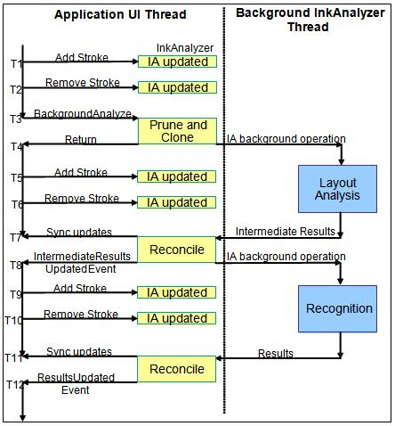

This topic discusses the details of eventing when using the ink analysis data proxy features.
In the data proxy usage of the InkAnalyzer, it is assumed that the application integrating the InkAnalyzer already has an existing document model to which they wish to proxy the results of analysis. It is also assumed that the application will have results from any previous analysis operation that they wish to build upon stored in their document model. There may also be non-ink context that may be added to the InkAnalyzer in the form of an ImageNode or TextWordNodeContextNode to be potentially annotated with ink.
The key to the data proxy system is for the application to flag the ContextNode as being "partially populated" by using PartiallyPopulated. When this flag is true the InkAnalyzer assumes that three things about that ContextNode:
Based on these three rules, if and when the InkAnalyzer needs additional information about a ContextNode it will raise the PopulateContextNode event and reference the ContextNode in question. This give the application an opportunity to set all known information on that ContextNode before the InkAnalyzer looks at it in more detail. After handling a PopulateContextNode event, the ContextNode in question must have a valid location property, the correct number of sub-nodes set if it is a container ContextNode or have the correct strokes set, by using SetStrokes, if it is a ink leaf ContextNode. Failure to correctly set this location and subnode or stroke information will result in an InvalidOperation exception. The sub-nodes for a container ContextNode can themselves be set as partially populated in which case more PopulateContextNode events will be raised if the InkAnalyzer determines they will be needed for the current analysis operation.
The tables below describe when the PopulateContextNode event will be raised throughout the usage of the InkAnalyzer.
After the InkAnalyzer has computed some restuls, it will look back to the application to update the results. The first event raised is the InkAnalyzerStateChanging event. This event simply signifies to the application that InkAnalyzer object's tree state is about to change. This provides applications an opportunity to set the PartiallyPopulated flag to true on any ContextNodes that have state stored elsewhere. The InkAnalyzer will then raise a series of PopulateContextNode events to determin the current state of the data. Once that is determiend a reconciliation operation is compelted to determine which background results can still be applied.
To apply results to the InkAnalyzer a series of tree modification events are raised. The tree modification events describe, step by step, all the changes needed to update the results. These events are intended to be handled in sucession without interuption or canceling. If the analysis operation is canceled (via the Abort method) during the processing of the tree modification events, the state of the InkAnalyzer will be invalid and the entire document may need to be re-analyzed.
The tables below describe when the tree modification events are raised throughout the usage of the InkAnalyzer. The tables refer to the timestamps shown following event flow diagram.

| Time Stamp | Event Type or Purpose | Event Raised | Comment |
|---|---|---|---|
| T1, T5 and T9 | [Inside the call to AddStroke()][Tree exploration Event] | PopulateContextNode event raised | There could be n number of PopulateContextNode events raised depending on how many UnclassifiedContextNodes exists with a PartiallyPopulated value set to true. |
| T1, T5 and T9 | [Tree modification Event] | ContextNodeCreated event raised | There will only be one ContextNodeCreated event raised as a result of calling the AddStroke method. All strokes are added the same unclassified ContextNode. |
| Time Stamp | Event Type or Purpose | Event Raised | Comment |
|---|---|---|---|
| T2, T6 and T10 | [Inside the call to RemoveStroke()][Tree exploration Event] | PopulateContextNode Event Raised | There could be a number of PopulateContextNode events raised depending on how many ContextNodes related to the strokes being deleted have a PartiallyPopulated value of true. |
| T2, T6 and T10 | [Tree modification Event] | ContextNodeDeleting Event Raised | There could be any number of ContextNodeDeleting events raised, depending on the ink content being deleted and the current Analysis structure. |
| Time Stamp | Event Type or Purpose | Event Raised | Comment |
|---|---|---|---|
| T3 | [Inside the call to BackgroundAnalyze()][Tree exploration Event] | PopulateContextNode Event Raised | There could be n number of PopulateContextNode events raised, depending on how many ContextNodes throughout the tree have a PartiallyPopulated value of true (One event per ContextNode that is needed in the current Analysis operation). |
| Time Stamp | Event Type or Purpose | Event Raised | Comment |
|---|---|---|---|
| T3 to T7 | [Events raised from BG thread] | Activity Event Raised | Several Activity events will be raised during this background period of analysis. |
| Time Stamp | Event Type or Purpose | Event Raised | Comment |
|---|---|---|---|
| T7 to T8 | [Events raised from BG thread, signifying the start of the first reconcile operation] | InkAnalyzerStateChanging Event Raised | Only one InkAnalyzerStateChanging event raised. This event is raised prior to inspecting the state of the InkAnalyzer, giving the application an opportunity to set the PartiallyPopulated value on any nodes or perform any local document locking needed. |
| T7 to T8 | [Tree exploration Event] | PopulateContextNode Event Raised | There could be n number of PopulateContextNode events raised, depending on ink content. |
| T7 to T8 | [Tree modification Event] | ContextNodeCreated Event Raised | There could be n number of ContextNodeCreated events raised, depending on ink content. |
| T7 to T8 | [Tree modification Event] | ContextNodeDeleting Event Raised | There could be n number of ContextNodeDeleting events raised, depending on ink content. |
| T7 to T8 | [Tree modification Event] | ContextNodeMovingToPosition | There could be n number of ContextNodeMovingToPosition events raised, depending on ink content. |
| T7 to T8 | [Tree modification Event] | ContextNodeReparenting | There could be n number of ContextNodeReparenting events raised, depending on ink content. |
| T7 to T8 | [Tree modification Event] | StrokeReparented | There could be n number of StrokeReparented events raised, depending on ink content. |
| T7 to T8 | [Tree modification Event] | ContextNodeLinkAdding | There could be n number of ContextNodeLinkAdding events raised, depending on ink content. |
| T7 to T8 | [Tree modification Event] | ContextNodeLinkDeleting | There could be n number of ContextNodeLinkDeleting events raised, depending on ink content. |
| T7 to T8 | [Tree modification Event] | ContextNodePropertiesUpdated Event Raised | There could be n number of ContextNodePropertiesUpdated events raised, depending on ink content. ContextNodePropertiesUpdated are scheduled to be rasied after all other ContextNode modification events are raised during this Reconcile period. |
| T7 to T8 | [Event signifies the end of the first reconcile operation] | IntermediateResults Event Raised | Only one IntermediateResults event will be raised per analysis operation. |
| Time Stamp | Event Type or Purpose | Event Raised | Comment |
|---|---|---|---|
| T8 to T11 | [Events raised from BG thread] | Activity Event Raised | Several Activity events will be raised during this background period of analysis. |
| Time Stamp | Event Type or Purpose | Event Raised | Comment |
|---|---|---|---|
| T11 to T12 | [Events raised from BG thread, signifying the start of the second reconcile operation] | InkAnalyzerStateChanging Event Raised | Only one InkAnalyzerStateChanging event raised. This event is raised prior to inspecting the state of the InkAnalyzer, giving the application an opportunity to set the PartiallyPopulated value on any nodes or perform any local document locking needed. |
| T11 to T12 | [Tree exploration Event] | PopulateContextNode Event Raised | There could be any number of PopulateContextNode events raised, depending on ink content. |
| T11 to T12 | [Tree modification Event] | ContextNodeCreated Event Raised | There could be any number of ContextNodeCreated events raised, depending on ink content. |
| T11 to T12 | [Tree modification Event] | ContextNodeDeleting Event Raised | There could be any number of ContextNodeDeleting events raised, depending on ink content. |
| T11 to T12 | [Tree modification Event] | ContextNodeMovingToPosition | There could be any number of ContextNodeMovingToPosition events raised, depending on ink content. |
| T11 to T12 | [Tree modification Event] | ContextNodeReparenting | There could be any number of ContextNodeReparenting events raised, depending on ink content. |
| T11 to T12 | [Tree modification Event] | StrokeReparented | There could be any number of StrokeReparented events raised, depending on ink content. |
| T11 to T12 | [Tree modification Event] | ContextNodeLinkAdding | There could be any number of ContextNodeLinkAdding events raised, depending on ink content. |
| T11 to T12 | [Tree modification Event] | ContextNodeLinkDeleting | There could be any number of ContextNodeLinkDeleting events raised, depending on ink content. |
| T11 to T12 | [Tree modification Event] | ContextNodePropertiesUpdated Event Raised | There could be any number of ContextNodePropertiesUpdated events raised, depending on ink content. ContextNodePropertiesUpdated are scheduled to be rasied after all other ContextNode modification events are raised during this Reconcile period. |
| T11 to T12 | [Event signifies the end of the second reconcile operation] | Results Event Raised | Only one Results event will be raised per analysis operation. |